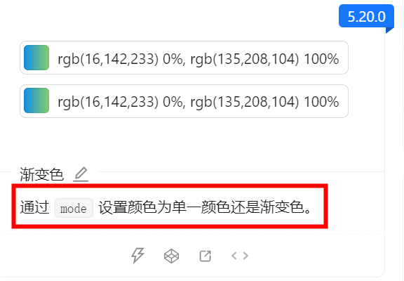

<div style="display: flex;gap: 36px;padding: 32px; background: linear-gradient(#e66465, #9198e5);border-radius: 8px;box-shadow: rgba(0,0,0, 0.1) 5px 5px 10px;">
    <div>
        
    </div>
    <div style="color: white">
        <div><strong>&#x59d3;&#x540d;&#xff1a;</strong>Meetacoo</div>
        <div><strong>&#x90ae;&#x7bb1;&#xff1a;</strong>2283785225@qq.com</div>
        <div><strong>&#x4e2a;&#x4eba;&#x7b80;&#x4ecb;&#xff1a;</strong>&#x6562;&#x60f3;&#x6562;&#x505a;&#x6562;&#x62fc;&#xff0c;&#x7231;&#x5de5;&#x4f5c;&#x7231;&#x751f;&#x6d3b;&#xff0c;&#x7231;Beauty&#x3002;</div>
    </div>
</div>
<h1>关于个人</h1>
<hr />
<h2>职业目标</h2>
<p>做好前端开发工程师的工作，将我的技能和激情投入到有挑战性的项目中。</p>
<hr />
<h2>小小贡献</h2>
<p>在ant-design和ant-design-mobile上有一点点的小贡献。</p>
<h2><em>新改的[2024.08.07]</em>
</h2>
<div>
  
  
</div>
<hr />
<h2>教育背景</h2>
<ul>
<li><strong>本科:</strong> 游戏开发是本命（文科生爆改工科女）</li>
</ul>
<hr />
<h2>技能</h2>
<ul>
<li><strong>过目不忘</strong> （假的）</li>
</ul>
<hr />
<h2>工作经验</h2>
<ul>
<li><strong>19年中旬至今</strong> 18年开始实习，19年正式入行</li>
</ul>
<hr />
<h2>个人主页</h2>
<ul>
<li><strong>Blog:</strong> <a href="https://blog.csdn.net/Meetacoo">CSDN</a></li>
<li><strong>Github:</strong> <a href="https://github.com/Meetacoo">Github</a></li>
</ul>
<hr />
<h2>兴趣爱好</h2>
<ul>
<li><strong>吃</strong> 爱好尝试各种美食，特别是喜欢尝试不同地区的特色小吃</li>
<li><strong>喝</strong> 最喜欢白开水了呢</li>
</ul>
<div style="text-align: right">*&#x4ee5;&#x4e0a;&#x4ecb;&#x7ecd;&#x7531;AI&#x751f;&#x6210;</div>